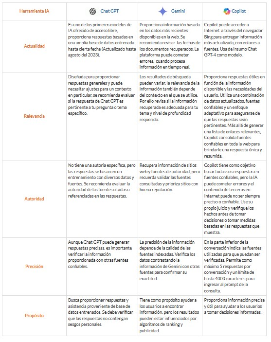
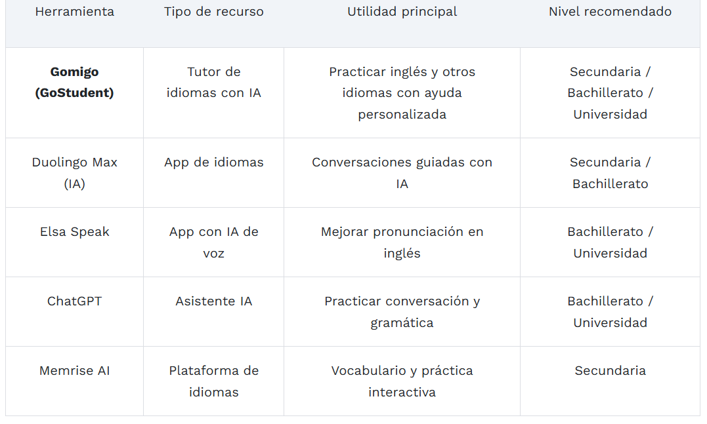
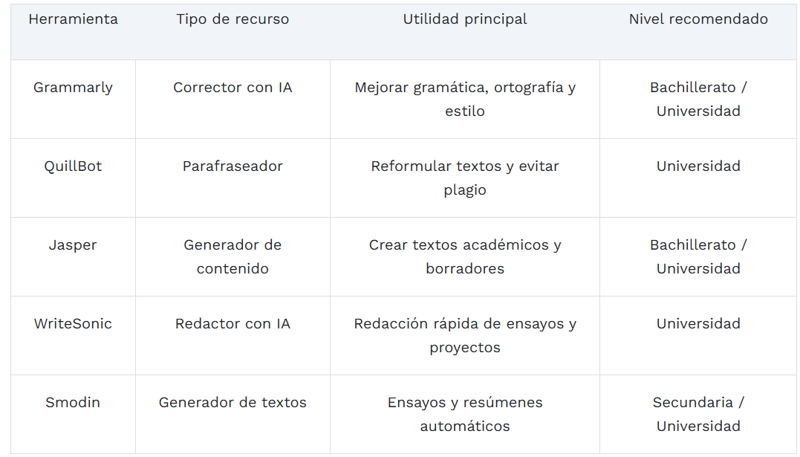
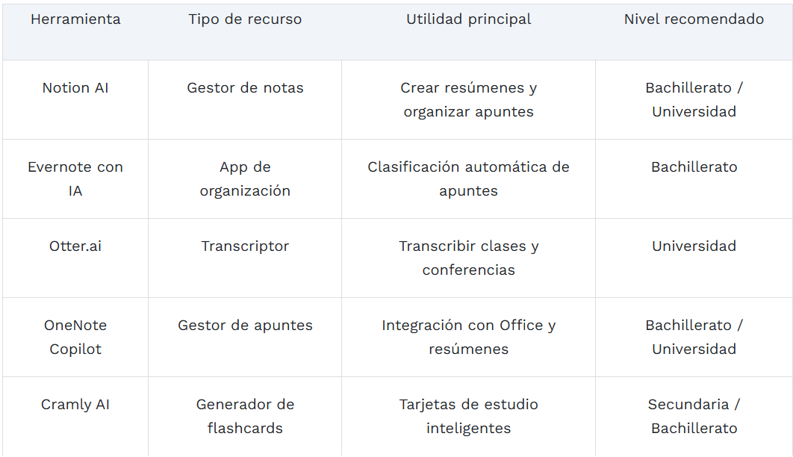

Beneficios de la IA
Personalización
Plataformas y aplicaciones inteligentes analizan tus hábitos de aprendizaje, detectan en qué áreas necesi tas reforzar y te ofrecen contenidos adaptados a tu ritmo. Esto significa que puedes avanzar más rápido en los temas que dominas y profundizar en aquellos que requieren mayor esfuerzo. Programas académicos como la Licenciatura Ejecutiva en Programación y Transformación Digital ayudan a los estudiantes a comprender cómo aplicar estas tecnologías en su vida diaria y profesional.
Potenciar Habilidades
inteligencia artificial también potencia la memoria y la retención del conocimiento. Existen aplicaciones que convierten apuntes en tarjetas digitales, juegos de repaso o cuestionarios interactivos que se ajustan a tu desempeño. Estas técnicas de aprendizaje adaptativo incrementan la comprensión y mejoran los resultados en evaluaciones. En la EBC, carreras como la Licenciatura Ejecutiva en Psicología Organizacional abordan cómo fun ciona la mente humana y cómo la tecnología puede reforzar la motivación y la concentración.
Automatización de Tareas
La IA permite resumir textos largos, generar esquemas, organizar calendarios de estudio y hasta responder dudas en tiempo real. Estas funciones liberan tiempo que los alumnos pueden invertir en actividades de análisi s crítico y resolución de problemas. Herramientas de traducción automática, asistentes de redacción y platafor mas de trabajo en línea permiten que estudiantes de distintas partes del mundo trabajen juntos en proyectos aca démicos.
Eficiencia en la gestión educativa
Gracias a la inteligencia artificial en la educación podemos automatizar las tareas más repetitivas. Esto permite a los maestros dedicar menos tiempo a la calificación de exámenes, la gestión de horarios o la organi zación administrativa para poder enfocarse todavía más en lo que realmente importa: la enseñanza personalizada y el apoyo directo a los estudiantes. La automatización de estas tareas libera tiempo valioso que los educadores pueden invertir en diseñar experiencias de aprendizaje más ricas y en atender las necesidades individuales de sus alumnos.
Soporte constante y retroalimentación instantánea
Las herramientas de IA pueden proporcionar asistencia y retroalimentación instantánea a los estudiantes las 24 horas del día, los 7 días de la semana. Esto resulta especialmente útil para garantizar un soporte constante y resolver dudas fuera del horario escolar. Los asistentes virtuales basados en IA pueden responder preguntas frecuentes, proporcionar explicaciones adicionales sobre conceptos complejos y guiar a los estudiantes a través de ejercicios práct icos, asegurando que nadie se quede atrás por falta de acceso a ayuda inmediata.
Mejora en la motivación y la capacidad de aprendizaje
La IA en la educación es una gran aliada a la hora de potenciar la motivación e incrementar la capacidad de aprendizaje de los estudiantes, aportando nuevas herramientas de gamificación y entornos de aprendizaje interactivos a las aulas. Los sistemas gamificados basados en IA pueden adaptar los desafíos al nivel exacto de cada estudiante, manteniendo el equilibrio perfecto entre dificultad y logro que mantiene a los alumnos comprometidos y motivados.
Análisis predictivo para mejorar los resultados
La inteligencia artificial en la educación puede identificar patrones y tendencias en el rendimiento de los estudiantes, ayudando a predecir y abordar posibles dificultades de aprendizaje antes de que se conviertan en problemas mayores. Esta capacidad predictiva permite intervenciones tempranas y personalizadas, identificando a estudiantes en riesgo de quedarse atrás y proporcionando el apoyo necesario en el momento adecuado.
Accesibilidad e inclusión educativa
La IA en la educación ofrece soluciones adaptativas que facilitan el proceso de aprendizaje a los estudiantes con necesi
dades especiales. Algunos ejemplos incluyen sistemas de lectura automática para personas con discapacidad visual, programas
de reconocimiento de voz para estudiantes con dificultades motoras o de escritura, subtítulos automáticos en tiempo real par
a estudiantes con discapacidad auditiva, y herramientas de traducción instantánea para estudiantes que están aprendiendo en
un idioma que no es su lengua materna.
Como puedes observar, la adopción de estas tecnologías no solo beneficia a los
estudiantes, sino que también apoya a los educadores en su misión de enseñar de manera más efectiva. Sin embargo, existe una
serie de aspectos que debemos tener en cuenta antes de incorporar la IA en la educación.
La Inteligencia Artificial como Recurso Educativo en el Aula
Artes del lenguaje: La IA como asistente de escritura, no como atajo
Las herramientas de IA como los chatbots y los generadores de texto pueden ayudar a los estudiantes a generar ideas, revisar y reflexionar, sin tener que pensar por ellos.
- Compañero de repaso: Pide a los estudiantes que introduzcan un borrador en un asistente de escritura (como un chat bot) y pide sugerencias para mejorar la selección de palabras o la variedad de oraciones. Enfatiza que están evaluando las sugerencias, no aceptándolas ciegamente
- Entrevista con personajes: Pida a los estudiantes que generen "entrevistas" de IA con personajes ficticios. Le pro porcionan a la IA una descripción del personaje y le piden que interprete un rol. Esto desarrolla habilidades de inferen cia y una comprensión más profunda de las motivaciones de los personajes.
- Coach de vocabulario: Usa IA para crear juegos de vocabulario personalizados u oraciones contextuales. Los estudiante s pueden usar una herramienta para generar oraciones originales con palabras nuevas y luego revisarlas o editarlas para mejorar su precisión.
Matemáticas: IA para práctica, explicación y análisis de errores
Puede utilizar la IA para apoyar la enseñanza de las matemáticas proporcionando práctica adicional, modelando pasos de resolución de problemas u ofreciendo explicaciones visuales para conceptos abstractos.
- Generador de problemas: Usa la IA para crear problemas de práctica personalizados, adaptados a tu unidad. Pide a los estudiantes que comprueben la precisión de la IA y corrijan errores, convirtiéndolos en miniprofesores.
- Tutor paso a paso: Pida a los estudiantes que usen IA para explicar cómo resolver un problema de varios pasos. Luego, pregunte: "¿Se le escapó algo a la IA?". Esto fomenta la metacognición y refuerza la comprensión procedimental.
Estudios sociales: IA para debates de políticas y charlas con figuras históricas
Las clases de estudios sociales pueden usar IA para explorar la empatía histórica, analizar sesgos y simular debates a lo largo del tiempo.
- Charla histórica: Indique a una IA que hable como una figura histórica y luego pida a los estudiantes que verif iquen la información. Por ejemplo, la indicación podría ser: "Imagina que eres Frederick Douglass. ¿Cómo responderías a este editorial?".
- Detector de sesgos: Usa la IA para reformular una noticia en diferentes tonos (neutral, sesgado, sensacionalis ta). Luego, pide a los estudiantes que comparen las versiones para practicar la alfabetización mediática.
Arte y temas creativos: IA para inspiración y crítica
Los profesores de materias creativas pueden usar la IA para generar ideas, mezclar estilos o criticar trabajos de nuevas formas.
- Generador de arte: Los estudiantes introducen un tema o concepto (como "polinización al estilo de Van Gogh") en una herramienta de imágenes con IA. Luego, crean una versión personal inspirada en el resultado de la IA, pero con su propia mano e interpretación.
- Mezclador de estados de ánimo musicales: Usa IA para generar melodías según el estado de ánimo o el género. Los est udiantes pueden remezclarlas, criticarlas o desarrollarlas en actividades de interpretación o composición.
- Crítica de diseño: Pida a los estudiantes que muestren su obra a una IA y pidan sugerencias (uso del color, simetrí a, equilibrio). Luego, analicen si esas críticas son válidas y qué ve el artista humano que la IA no.
Idiomas extranjeros: IA para inmersión, práctica y feedback personalizado
Las herramientas de IA pueden simular entornos lingüísticos inmersivos, proporcionar retroalimentación instantánea y ayu dar a los estudiantes a explorar culturas y contextos más allá de los diálogos de los libros de texto.
- Práctica conversacional: Usa herramientas de chat con IA para simular conversaciones con un hablante nativo. Los es tudiantes pueden elegir temas (pedir comida, planificar un viaje, hablar de aficiones) y practicar registros informales y formales.
- Asesor gramatical: Pide a los estudiantes que introduzcan sus transcripciones de textos escritos o hablados en la IA para una corrección gramatical instantánea. Luego, pídeles que reflexionen: ¿Por qué la IA sugirió esa correcc ión? Esto refuerza las reglas gramaticales en contexto.
- Inmersión cultural: Pide a la IA que genere breves escenarios culturales, como la descripción de un mercado tra dicional en Madrid o un día escolar en Tokio. Los estudiantes pueden traducirlos, resumirlos o responderlos en el idio ma de destino.
Herramientas de estudio
1. NotebookLM: investigación y síntesis de documentos
NotebookLM es una herramienta desarrollada por Google que permite analizar documentos académicos utilizando intel
igencia artificial.
Los estudiantes pueden subir PDFs, apuntes o materiales de clase y hacer preguntas directamente sobr
e ellos.
Esto permite:
• resumir textos complejos
• encontrar información específica rápidamente
• conectar
ideas entre diferentes documentos
• generar preguntas de estudio
Cuando se utiliza con materiales académicos fiables,
NotebookLM se convierte en una herramienta poderosa para investigar y sintetizar información. notebooklm.google.com
2. ChatGPT: comprender conceptos difíciles
ChatGPT es probablemente la herramienta de IA más utilizada por estudiantes en todo el mundo.
Su principal utilidad
educativa no es generar trabajos completos, sino explicar conceptos complejos de forma clara.
Por ejemplo, puede
ayudar a:
• explicar teorías académicas
• simplificar conceptos difíciles
• generar ejemplos prácticos
•
practicar preguntas de examen
Utilizado correctamente, funciona como un asistente de aprendizaje, no como sustituto del
estudio.chat.openai.com
3. Grammarly: mejorar la escritura académica
La escritura sigue siendo una habilidad fundamental en la educación superior.
Grammarly utiliza inteligencia artificial
para revisar textos y ayudar a los estudiantes a mejorar su redacción.
Permite:
• detectar errores gramaticales
•
mejorar la claridad de los textos
• ajustar el tono académico
• revisar la estructura de los trabajos
Es especialmente
útil para estudiantes que escriben ensayos, informes o trabajos de investigación. gram
marly.com
4. ChatPDF: analizar artículos y papers académicos
Los estudiantes universitarios trabajan constantemente con documentos PDF: artículos científicos, capítulos de libros o
investigaciones.
ChatPDF permite interactuar con estos documentos mediante preguntas.
Los estudiantes pueden:
•
localizar información específica dentro de un paper
• generar resúmenes de capítulos
• identificar conceptos clave
• comprender textos complejos más rápido
Esto reduce significativamente el tiempo necesario para analizar documentos académicos.
chatpdf.com
5. Notion AI: organizar el conocimiento
Uno de los mayores problemas de los estudiantes es la organización de la información.
Notion AI permite crear sistema
s personales de conocimiento donde los estudiantes pueden:
• organizar apuntes por asignaturas
• crear bases de dat
os de conceptos
• generar resúmenes automáticos
• conectar ideas entre diferentes materias
Muchos estudiantes
utilizan Notion como un segundo cerebro digital para gestionar su aprendizaje.
6. Quizlet: mejorar la memoria con repetición espaciada
Quizlet es una de las plataformas más utilizadas para crear tarjetas de estudio (flashcards).
Ahora incorpora inteli
gencia artificial para generar preguntas automáticamente a partir de apuntes o textos.
Permite a los estudiantes:
•
crear tarjetas de memoria rápidamente
• practicar con ejercicios adaptativos
• estudiar con repetición espaciada
• evaluar su progreso
quizlet.com
7. Khanmigo: tutor personalizado basado en IA
Khanmigo es el asistente de inteligencia artificial de Khan Academy, diseñado específicamente para educación.
Funciona
como un tutor virtual que ayuda a los estudiantes a:
• resolver problemas paso a paso
• practicar ejercicios
•
recibir explicaciones alternativas
• reforzar conceptos difíciles
A diferencia de otros asistentes de IA, Khanmigo
está diseñado específicamente para apoyar el aprendizaje sin sustituir el pensamiento del estudiante.
khanacademy.org/khan-labs
khanacademy.org/khan-labs
Para Analizar fuentes confiables

Para aprender Idiomas

Redactar y mejorar documentos

Organizar estudios y apuntes

Referencias
Recomendaciones para el uso educativo de la inteligencia artificial Generativa en la UNAM. (2025).Grupo Académico de
Inteligencia Artificial Generativa En Educación UNAM.
IA en la Educación: Ventajas, Desventajas y Cómo Integrarla. (2026, 22 abril). https://www.cegos.es/insights/blog/transformacion-digital/ia-educacion
Kamel, A., & Kamel, A. (2025, 20 octubre).Como usar la IA para estudiar y obtener mejores resultados. Ventana | EBC.
https://www.ebc.mx/venta
na/como-usar-la-ia-para-estudiar-y-obtener-mejores-resultados/
Leonard, S. (2026, 21 abril). 18 maneras en que los educadores pueden usar la IA en el aula. TAO. https://www.taotesting.com/es/blog/18-ways-ed
ucators-can-use-ai-in-the-classroom/
El uso de la IA en la educación: decidir el futuro que queremos. (2024, 17 mayo).https://www.unesco.org/es/articles/el-uso-de-la-ia
-en-la-educacion-decidir-el-futuro-que-queremos
Rabal, M. (2026, 27 marzo). Inteligencia artificial para estudiantes: 7 herramientas clave. Burando Kizuna. //www.burandokizuna.com/es/blog/inteligencia-art
ificial-para-estudiantes
IA en la Educación: Ventajas, Desventajas y Cómo Integrarla. (2026b, abril 22). //www.cegos.es/insights/blog/transformacion-digital/ia-educacion
Es, G. (2025, 1 septiembre). Las 30 mejores herramientas de IA educativa para estudiantes.Gostudent. https://www.gostudent.org/es-es/bl
og/las-30-mejores-herramientas-de-ia-educativa-para-estudiantes